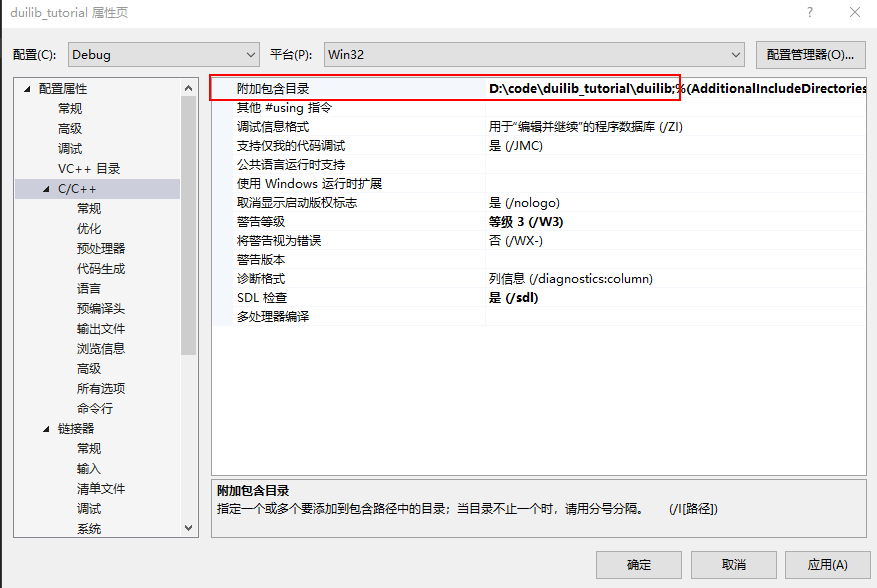

我们在这一章主要了解如何使用动态库或静态库来创建一个基于 duilib 的简单界面，然后再循序渐进的往深入去挖一挖。
Duilib 实现了一个窗口基类，我们自己的窗口只需要继承这个类，实现三个必须要实现的纯虚函数，然后设置一下窗口使用的配置文件、窗口配置文件的路径和窗口的名称就可以了。
- 继承 WindowImplBase 类（duilib 窗口管理的一个基类）
- 实现 GetWindowClassName 接口（描述窗口唯一名称的方法）
- 实现 GetSkinFile 接口（描述窗口样式的 xml 文件名称方法）
- 实现 GetSkinFolder 接口（描述窗口样式文件路径的方法）
- 创建一个窗口描述配置文件（描述窗口的 xml 样式文件）
根据上面的方法，我们把向导自动生成的项目代码删一删，修改 duilib_tutoral.cpp 文件，仅留下一个 main 函数，如下所示：
// duilib_tutorial.cpp : 定义应用程序的入口点。
//
#include "framework.h"
#include "duilib_tutorial.h"
int APIENTRY wWinMain(_In_ HINSTANCE hInstance,
_In_opt_ HINSTANCE hPrevInstance,
_In_ LPWSTR lpCmdLine,
_In_ int nCmdShow)
{
UNREFERENCED_PARAMETER(hPrevInstance);
UNREFERENCED_PARAMETER(lpCmdLine);
return 0;
}
引入 duibli 头文件和命名空间
我们在头文件 framework.h 中加入 duilib 库的头文件和命名空间
// header.h: 标准系统包含文件的包含文件，
// 或特定于项目的包含文件
//
#pragma once
#include "targetver.h"
#define WIN32_LEAN_AND_MEAN // 从 Windows 头文件中排除极少使用的内容
// Windows 头文件
#include <windows.h>
// C 运行时头文件
#include <stdlib.h>
#include <malloc.h>
#include <memory.h>
#include <tchar.h>
// duilib 头文件
#include "UIlib.h"
using namespace DuiLib;
为了能够正确找到头文件，我们需要在工程属性页的 配置属性 -> C/C++ -> 常规 -> 附加包含目录 选项加入 duilib 头文件所在目录。

定义主窗口类
在 duilib_tutoral.cpp 中创建一个自己的窗口，来继承 WindowImplBase ，并实现 GetSkinFolder GetSkinFile GetWindowClassName 三个接口，代码如下：
class MainWndFrame : public WindowImplBase
{
protected:
virtual CDuiString GetSkinFolder() override; // 获取皮肤文件的目录，如果有多层目录这里可以设置
virtual CDuiString GetSkinFile() override; // 设置皮肤文件名字
virtual LPCTSTR GetWindowClassName(void) const override; // 设置当前窗口的 class name
public:
static const LPCTSTR kClassName;
static const LPCTSTR kMainWndFrame;
};
DuiLib::CDuiString MainWndFrame::GetSkinFolder()
{
// GetInstancePath 接口返回默认的皮肤文件位置
// 在 main 函数中我们可以通过 SetResourcePath 来设置路径
return m_PaintManager.GetInstancePath();
}
DuiLib::CDuiString MainWndFrame::GetSkinFile()
{
// 成员变量定义的皮肤文件名
return kMainWndFrame;
}
LPCTSTR MainWndFrame::GetWindowClassName(void) const
{
// 成员变量定义的窗口 class name
return kClassName;
}
const LPCTSTR MainWndFrame::kClassName = _T("main_wnd_frame");
const LPCTSTR MainWndFrame::kMainWndFrame = _T("main_wnd_frame.xml");
仔细分析代码，我们可以看到我们指定了这个窗口的皮肤路径是默认路径（取决于我们如何设置，稍后就能看到），并指定了这个窗口的皮肤文件 main_wnd_frame.xml ，最后还指定了一下窗口的类名。
新建主窗口
这样这个窗口就创建好了，我们还需要在 main 函数中把这个窗口 new 出来，其次还需要创建一个 xml 文件来描述一下这个窗口的样子。
先来写 main 函数。
int APIENTRY wWinMain(_In_ HINSTANCE hInstance,
_In_opt_ HINSTANCE hPrevInstance,
_In_ LPWSTR lpCmdLine,
_In_ int nCmdShow)
{
UNREFERENCED_PARAMETER(hPrevInstance);
UNREFERENCED_PARAMETER(lpCmdLine);
// 设置窗口关联的实例
CPaintManagerUI::SetInstance(hInstance);
// 设置皮肤的默认路径
CPaintManagerUI::SetCurrentPath(CPaintManagerUI::GetInstancePath());
CPaintManagerUI::SetResourcePath(_T("theme"));
// 创建窗口
MainWndFrame* pMainWndFrame = new MainWndFrame;
pMainWndFrame->Create(nullptr, MainWndFrame::kClassName, UI_WNDSTYLE_DIALOG, 0);
pMainWndFrame->CenterWindow();
pMainWndFrame->ShowWindow();
// 消息循环
CPaintManagerUI::MessageLoop();
if (nullptr != pMainWndFrame) {
delete pMainWndFrame;
}
return 0;
}
通过 CPaintManagerUI 的一些静态设置了当前关联的窗口实例、皮肤文件的路径，接下来 new 了一个我们继承 WindowImplBase 所产生的窗口。调用 Create 方法创建了窗口，使用 CenterWindow 让窗口居中显示，再调用 ShowWindow 显示窗口。最后我们使用了 CPaintManagerUI 的 MessageLoop 启动消息循环的监听，保证程序不被退出。并且在退出前我们要 delete 掉 new 出来的窗口。这样创建窗口的过程就完事儿了，但是现在还是不能运行的，我们还需要完善一下这个窗口的 xml 文件。
编写页面布局文件xml
代码中设置了皮肤文件路径是 EXE 目录下的 theme 文件夹，所以要在 EXE 生成的文件夹创建一个 theme 文件夹，把 main_wnd_frame.xml 放到这个里面。
把如下代码添加到 xml 文件中（先暂时不需要关注 xml 的内容，后面会详细的讲解）
<?xml version="1.0" encoding="UTF-8"?>
<Window size="640,480" caption="0,0,0,35">
<HorizontalLayout bkcolor="#FFFFFFFF">
<Button text="Hello DuiLib" bkcolor="#FF1296DB"/>
</HorizontalLayout>
</Window>
解决 duilib 依赖
所有准备工作就绪，我们编译一下程序，但你会发现报了一大堆的错误
很明显，程序不知道到哪里去找我们用到的这些函数，换句话说还没告诉程序要用 duilib 的动态库还是静态库。
如果你想使用动态库，那么在项目属性页的 配置属性 -> C/C++ -> 预处理器 中增加 UILIB_EXPORTS 的预定义宏，这是告诉 duilib 你需要把我们用到的接口按动态库的方式导出。
其实搜索一下 UILIB_EXPORTS 就可以看到具体的定义了。
之后，根据我们在 duilib 工程中设置的目标文件生成路径，将其加入到 duilib_tutorial 工程的 配置属性 -> VC++目录 -> 库目录 选项中
我们还需要设置我们需要链接的动态库所在的目录，设置 配置属性 -> 链接器 -> 常规 -> 附加库目录 选项
最后，在 配置属性 -> 链接器 -> 输入 -> 附加依赖项 里加入需要链接的库名
注意，不同平台和配置下需要根据自身的配置填写，填入内容可能不同。
虽然链接的是动态库，但是加入的库名是 lib 后缀，这个文件是对应动态链接库的导入库，实际的执行代码位于动态库中，导入库只包含了地址符号表等，确保程序找到对应函数的一些基本地址信息。
如果你想使用静态库，同样，定义一个 UILIB_STATIC 的预定义宏
在 配置属性 -> 链接器 -> 常规 -> 附加库目录 选项中设置静态库所在目录
然后在项目 配置属性 -> 连接器 -> 输入 中，输入附加依赖库的 lib 文件名字就可以啦
注意：静态库的 lib 文件和动态库 lib 文件不是同一个东西
当你定义完预定义宏后再次编译就可以编译通过了，运行程序后窗口就显示出来了。
如下所示
运行时如果使用的是链接 duilib 动态库的方式，生成的 exe 可执行文件必须和 duilib 的 dll 动态库文件位于同一目录，否则会运行失败。 可执行文件和布局文件夹 theme 也位于同一目录下。
这个窗口看起来有点简陋，只有蓝色背景面板上显示几个单词。
先不着急，在接下来的教程中一点点循序渐进的往界面中添加内容。